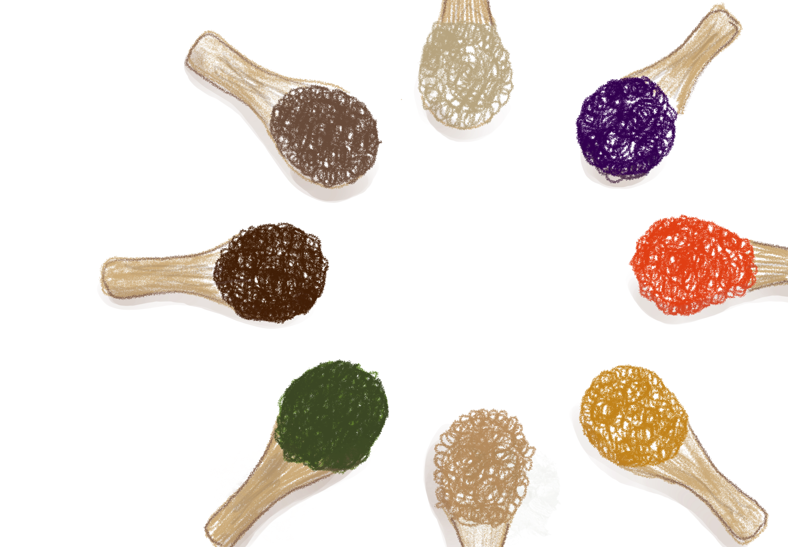
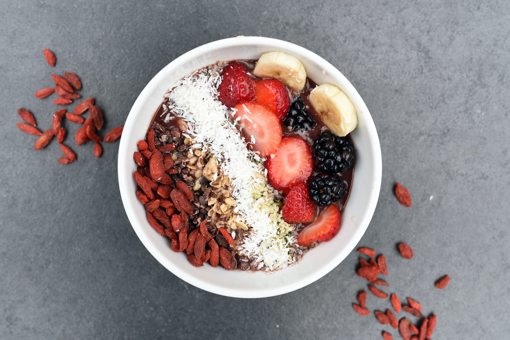
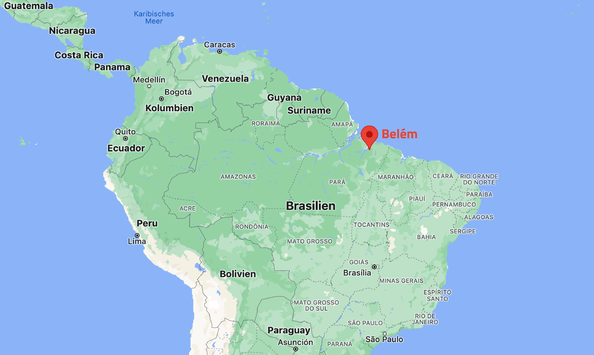
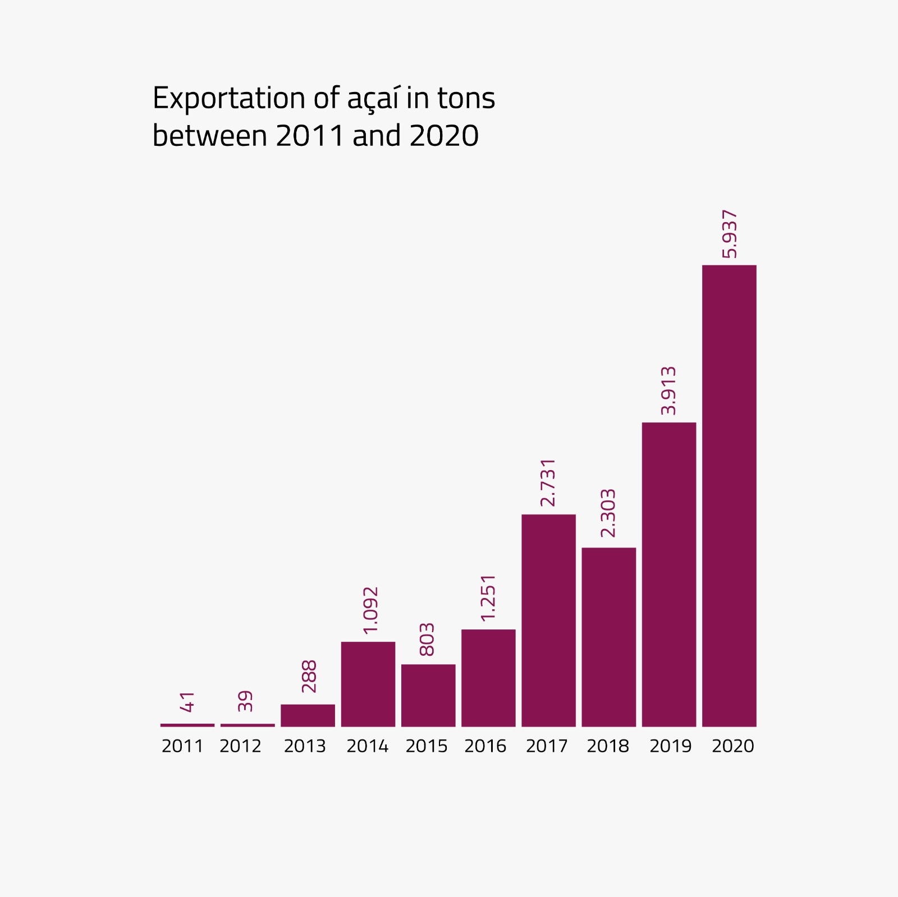
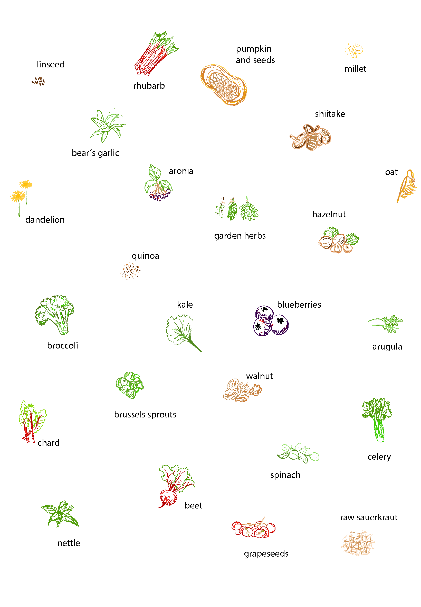

What is a superfood?
To be honest, you could say superfoods do not exist. But the term "superfood" has been used as a marketing term and buzzword in the language of food and health since the beginning of the 20th century and is nowadays widely known. However, there is no legally or official technical definition of the word. And the scientific evidence for the health effects of these foods does not necessarily apply to real diets. That’s why the term is not commonly used by experts, dietitians, and nutritionists, most of them even dispute that certain foods have those health benefits.

Even without scientific evidence of exceptional nutritional content, many new, exotic, and foreign fruits or ancient grains are marketed under the term superfruit or supergrain after their introduction or reintroduction into Western markets. But in the end they are fruits and grains like any other. The only difference is probably that they had to fly all the way around the globe. And where they come from they are basic food like for us in Germany the apple. In 2007, the marketing of products as "superfoods" was banned in the European Union's Health Claims Regulation unless there is a specific, approved health claim supported by credible scientific research. However, it is questionable how such scientific findings, obtained for example under laboratory conditions, with animal experiments or by administering very high doses, can be transferred to real diets.
Nestle, M. (2018, 30. October). Superfoods are a marketing ploy. The Atlantic. This post is adapted from Nestle’s book, Unsavory Truth: How Food Companies Skew the Science of What We Eat. (2018) Basic Books. Retrieved 02, 05 September 2022. Superfoods are a marketing ploy.
BBC News (2007, 29. Juni). "Superfood 'ban' comes into effect". Retrieved 02 September 2022. Superfood 'ban' comes into effect
European Food Information Council. (11 December 2012) EUFIC "The science behind superfoods: are they really super?". Retrieved 02, 05 September 2022.
The science behind superfoods: are they really super?
How did the superfood-culture arise?
The term was apparently first used in 1949 in a Canadian newspaper when discussing the alleged nutritional qualities of a muffin. In the late 20th and early 21st centuries, the term "superfood" was used as a marketing tool to sell certain foods, dietary supplements, foods with selected food additives, and self-help books on fad diets that promised to improve health. "Superfood" products were sold at a higher price than similar foods not marketed with this designation even though the purported health benefits and effects of those foods were not supported by scientific studies.

In 2007, it was predicted that the superfoods category would become a billion-dollar global industry by 2011, with several thousand new superfruit products entering the market. According to Datamonitor, superfruit product launches grew at a rate of 67% (2007-2008). The superfruit category was one of the top 10 global trends in consumer products in 2008. The manufacturers use these superfruits to enhance the flavor of foods, to mask other tastes, or to create the impression of novelty and health. But actually, it’s all just marketing.
More than a dozen industry publications on functional foods and beverages refer to various exotic species as superfruits, with estimates of about 10,000 new products introduced in 2007-2008. Mostly relatively rare fruits originating in Oceania (noni), China (goji, sea buckthorn), Southeast Asia (mangosteen), or Brazil (açaí) and unfamiliar to U.S. consumers were among the first wave of superfruits to be successfully used in product manufacturing.
Over the years 2011 to 2015, the number of food or beverage products containing the words "superfood", "superfruit" or "supergrain" doubled. Grains such as quinoa, barley, spelt, and millet are marketed as "heritage" or "ancient" superfoods because they have been consumed over centuries, are perceived as a whole food, and require minimal processing.
And when we go to the supermarkets now, we see, that it is till today or especially today still such a huge marketing thing and super fruits are everywhere: frozen açaí bowls, starfruit shampoo, goji cornflakes, superfruit juice… in every corner.
Hill, Amelia (2007-05-13). "Forget superfoods, you can't beat an apple a day" The Guardian. https://www.theguardian.com/uk/2007/may/13/health.healthandwellbeing1 Retrieved 20, 23 August 2022. Forget superfoods, you can't beat an apple a day
Superfood. Wikipedia. https://en.wikipedia.org/wiki/Superfood. Retrieved 20, 23 August 2022. Superfood
Fletcher, Anthony (31 March 2006). "Super fruits set to dominate flavour market". William Reed Business Media Ltd. https://www.foodnavigator.com/Article/2006/03/31/Super-fruits-set-to-dominate-flavour-market Retrieved 23 August 2022. Super fruits set to dominate flavour market
McNally, Alex (10 August 2007). "Superfoods market set to double by 2011". William Reed Business Media Ltd. https://www.nutraingredients.com/Article/2007/08/10/Superfoods-market-set-to-double-by-2011 Retrieved 23 August 2022. Superfoods market set to double by 2011
Doubtful benefits of superfoods
According to Cancer Research UK, the term 'superfood' is really just a marketing tool with little scientific basis. Although superfoods are often touted as a means of preventing or curing disease, including cancer, Cancer Research UK warns that they "cannot be a substitute for a generally healthy and balanced diet." According to Catherine Collins, senior dietitian at St. George's Hospital in London, the term can be harmful: "There are so many misconceptions about superfoods that I don't know where best to start in terms of dismantling the whole concept.“
The Dutch food safety organization Voedingscentrum ("Nutrition Center") found that health claims made by marketers touting goji berries, hemp seeds, chia seeds and wheatgrass are not scientifically proven. The organization warned that people who consume such foods in large quantities could develop an "impaired, unbalanced diet." Berries are still being researched, and there is no evidence that they offer any health benefits other than other fresh fruits Blueberries, in particular, are not particularly nutrient-dense; they have moderate levels of only three key nutrients: Vitamin C, Vitamin K, and Manganese.

Photo by Emma-Jane Hobden on Unsplash
di Noia, Jennifer (2014-06-05). "Defining Powerhouse Fruits and Vegetables: A Nutrient Density Approach". Preventing Chronic Disease. US: National Center for Chronic Disease Prevention and Health Promotion. 11: E95. doi:10.5888/pcd11.130390. ISSN 1545-1151. PMC 4049200. PMID 24901795. Retrieved 15 July 2022
Defining Powerhouse Fruits and Vegetables: A Nutrient Density Approach
Superfood. Wikipedia. https://en.wikipedia.org/wiki/Superfood. Retrieved 20, 23 August 2022.
Superfood
The exotification of superfoods
When you start googling about superfuits you pretty quickly get on a path where you just think, wow this is great. Always described as „something that is waiting to be discovered by you“, „Hailing from more exotic climes […] fruits and vegetables with some impressive health credentials“ „keep us young, strong and protected from a catalogue of diseases“ or „Superfoods typically grow in exotic, remote from civilization areas, but your access to them is still wide since their popularity makes them increasingly available on the global market.“
So this definitely catches the western consumers and they think, that the fruits from far away have to be more special and better when they come from the other side of the planet and that they could not have the same benefits from boring local fruits. But why do we have to exoticise everything?
There is an article by Dr. David L. Katz and Mark Bittman about exactly this topic: „Why Superfoods Are Superfluous — at Best“. Dr. Katz is the director of The Yale-Griffin Prevention Research Center and Mark Bittman has written about food for nearly 40 years:
„There’s no such thing as a superfood. […] There are many foods with terrific nutritional profiles: rich in valuable nutrients, free from nutritional liabilities, and either low in calories or notably satiating. Even a short list would overwhelm superfood claimants: spinach, […] Consider all fruits and vegetables, legumes and whole grains: It’s pretty much that simple. Being “super” becomes super tough when you’ve got so much company. Accordingly, superfoods are pitched to us under a mystique of exoticism. The super nutrition of grocery cart mainstays is never mentioned because that would dilute the mystique. A line from The Incredibles comes to mind: No one’s special when everybody is. Superfood claimants generally have two key characteristics: They are, for the most part, genuinely nutritious foods; and, they come from far away so that, ideally, you’ve not heard of them before: açaí, or noni, or goji. As a result, whether or not they are hard to get, they are often a niche or new market, and so someone stands to make a lot of money off of them; they’re very profitable. Which, unless you’re the one selling them, should leave you cold. But these characteristics do not create super qualities when it comes to nutrition. We’ll repeat: There are no superfoods, exotic or otherwise. The reasons are all but self-evident. […] It also remains true if you drink an occasional soda or eat an occasional candy bar: These won’t kill you on the spot any more than an açaí berry will cure what ails you.“
Dr. David L. Katz and Mark Bittman (May 6, 2019). „Why Superfoods Are Superfluous — at Best“. Medium. https://heated.medium.com/why-superfoods-are-superfluous-at-best-8c5f0483c9cf Retrieved 15 July 2022.
Why Superfoods Are Superfluous — at Best
James Shaw (March 17, 2020).Organic Facts. https://www.organicfacts.net/exotic-superfoods.html Retrieved 02 September 2022
Exotic Superfoods
Fine Dining Lovers, Editorial Staff (26 January, 2016).Sanpellegrino S.p.A. https://www.finedininglovers.com/article/11-exotic-superfoods-worth-knowing Retrieved 02 September 2022. Exotic Superfoods worth knowing
Indigenous myth about the origin of açaí
In the legend, an indigenous tribe living where today is Belém saw its population grow too fast - faster than the food supply. The chief took drastic measures to avoid starvation, and condemned all newborn babies to death. His daughter, Iaçã, was pregnant, but even the leader's granddaughter was not spared. Iaçã was desolate and asked the god Tupã to put an end to the tribe's suffering.
At night, she heard a child crying, and followed the sound into the forest. The next day, Iaçã was found dead at the base of a palm tree. Her eyes were open and staring at the top of the tree, in the direction of the small fruits that dangled from the branches. The tribe began to support themselves with a purple juice made from the fruit and abolished the policy of sacrifice. Açaí is Iaçã in reverse.

What is açaí?
Açaí is a berry native to the Amazon that grows on a palm tree.
In Pará, the largest producer of the fruit, açaí is a raw material in the kitchen and is eaten as an accompaniment to fried fish or shrimp, with the locals pouring it on as a sauce or dipping the fish in the açaí.
As raizes do açaí
How did açaí become a superfood?
In Brazil, the popularization of açaí had an unusual protagonist: the Gracie Family of jiu-jitsu fighters. The brothers Carlos and Hélio Gracie transformed Brazilian jiu-jitsu into an international brand. The spotlight transformed the family, originally from Belém, into a kind of "showcase" of the customs of Brazil's northern region, and this included açaí as well.
The Gracie family inaugurated the relationship between açaí and sports, which soon became inseparable. Producers took advantage of the breach to sponsor MMA championships, popular in the North. On the beaches of Rio de Janeiro, açaí became a trend.
In 2000, a couple of American surfers visiting Brazil became particularly interested in the purple fruit. They started taking the frozen pulp to the United States and selling it on the beaches of Los Angeles.
Today, this practice would be unthinkable. The exportation of natural foods follows strict rules to avoid contamination - and the pulp only crosses the border after being pasteurized.
At that time, however, the "informal" açaí was transported without going through any industrial process - and without sweetening. In Brazil, it was a success for those who liked the earthy taste and the idea of tasting a fruit from the Amazon, but it was not a business for the masses.
The açaí berry reached agricultural engineer Ben Hur Borges, who worked with açaí palm hearts in Pará. He saw the opportunity to adapt the product to foreign tastes. And he introduced the export açaí to its great companion: guaraná. The eye-shaped fruit was already known abroad for being the symbol of the Amazon. The guaraná extract made the purple paste sweeter and more palatable. It worked so well that the taste that is now associated with açaí comes from this mixture.
The 2000s brought out the overwhelming wave of "antioxidants". Studies on health and aging kept mentioning the mysterious "free radicals", which increase in concentration in the body with age. The damage they caused has to do with a cellular process called oxidation.
Substances that protect the body from oxidation are called antioxidants - and much research has been devoted to understanding the influence of a diet rich in molecules with this power.
The food industry saw the trend and embraced the concept. The word "antioxidant" came to be understood as "anti-aging". And then the açaí gained a powerful scientific marketing.
Where and how is açaí cultivated?
According to data from IBGE the production of açaí in 2000 was 121,800 tons and in 2016 was 215,609 tons this considerable increase is the result of increased national and international consumption. Only in the state of Pará there are approximately 200 industries related to açaí that work with pulp, ice cream, candy, etc.
According to data from CONAB, there was an average production of 1.5 million tons between 2015 and 2020. In 2020, the national production was 1.7 million tons. Pará accounts for 95% of the total produced, in about 212,000 hectares dedicated to the cultivation of the fruit on terra firme or flooded areas.
How is açaí processed to be exported and by whom?
It is difficult to taste the real açaí outside the North of Brazil. After harvesting, the fruit must be beaten within 24 hours to preserve the color, smell and flavor - preferably. Consumption also needs to be fast, If the açaí is not eaten within 72 hours, it starts to oxidize.

Production, however, is still centered in the Amazon - and you don't see large estates all over Brazil planting and harvesting açaí at a crazy pace. Açaí is not planted very much. The açaí tree grows in floodplains, on the banks of rivers. Each adult tree needs 120 liters of water per day to bear fruit. Even in the North - which already has the climate, rain, and river conditions in its favor - most of the açaí production comes from the management of native plants. Planted açaí trees even exist, but they are a minority.
The land preparation consists of removing the taller trees to make room for the açaí trees and letting the fruits and fallen leaves do the work of nourishing and generating more açaí trees. The city that produces the most açaí in the world is Igarapé-Miri, in the interior of Pará, responsible for more than 20% of the production.
Who harvests the fruit is the riverside community - more specifically the "peconheiros", who get this nickname because they climb the trees from 20 to 25 meters with the help of a peconha. It is a kind of rope that, wrapped around the feet, facilitates the ascent. Up there, the peconheiro cuts bunches of açaí with a machete and, on the way back, sells them to the industry. According to data from the National Supply Company (Conab), the açaí production represents 70% of the source of income of the riverside population of Pará.
Picture:
https://conexaoplaneta.com.br/wp-content/uploads/2021/10/colheita-acai-wenderson-nunes-cna.jpg
Where is the açaí going?
The pulp then needs to be frozen and industrialized to reach other parts of the country and the world. Finland buys their açaí very sweet, while the United States prefers something more natural.
It was at the turn of the millennium that the açaí ventured outside the North. Today, more than one million tons of açaí is produced per year, and 95% of this comes from Pará. In the early 2000s, production did not reach 120,000 tons, and remained almost entirely within the state.
Local consumption is still huge - 60% of the world's açaí is consumed in Pará, but 30% is consumed by the rest of the country, and 10% goes to exportation. 77% of the exported açaí is destined for the United States.

Enviromental impact of the cultivation of açaí
Açaí has won over the world in recent decades. The production of this typical fruit of the Amazon region has skyrocketed, earning millions of dollars for producers and generating employment and income for many riverside families.
But all this demand is taking a toll on the Amazon, according to a new study conducted by Brazilian scientists.
Symbol trees of the Amazon, like the samaúma and the jatobá, are disappearing from the landscape and giving way to monoculture fruit plantations.
The process is so intense that it has even earned a name for itself from scientists in the field: it's the "açaização" of the Amazon.
The study points out that in areas where there are more than 600 açaí clumps (bushes) per hectare, functional richness has fallen by around 50%.
The scientists explain that each species has a specific function in the forest gear, and the absence of some can destabilise the system. The taller plants, like the samaúma, for example, provide shade and recycle nutrients from the soil. Without them, the soil becomes more acidic.
The açaí tolerates acidity, but other plants don't. This means that after being cut down, these plants will hardly be able to grow again in that place.
Tall trees are also shelter for the beehives of typical bee species. These insects pollinate various species, including açaí. The loss of diversity and the benefits this generates makes the entire social-ecological system more vulnerable, "as with any local economy sustained by a monoculture of an international commodity."
Como sucesso do açaí ameaça biodiversidade da Amazônia. Julia Braun Da BBC News Brasil em São Paulo 13 março 2022 Como sucesso do açaí ameaça biodiversidade da Amazônia
Intensification of açaí palm management largely impoverishes tree assemblages in the Amazon estuarine forest. Madson A.B.Freitas José L.L.Magalhães Carlos P.Carmona Víctor Arroyo-Rodríguez Ima C.G.Vieira Marcelo Tabarelli. Biological Conservation Volume 261, September 2021, 109251 Intensification of açaí palm management largely impoverishes tree assemblages in the Amazon estuarine forest
Local can be sexy and healthy, too!
Try these out:

What does Municipalism mean to you?
Let us know at :
communicating.municipalism@aol.com
We will review the messages manually and possibly include them here.